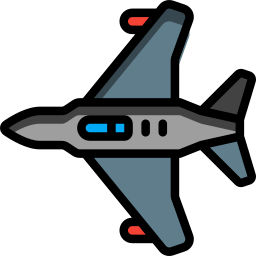

Exosphere
The exosphere is the outermost layer of our atmosphere. “Exo” means outside and is the same prefix used to describe insects like grasshoppers that have a hard shell or “exoskeleton” on the outside of their body.
The
exosphere is the very edge of our atmosphere. This layer separates the rest of the atmosphere from outer space. It’s about 6,200 miles (10,000 kilometers) thick. That’s almost as wide as Earth itself. The exosphere is really,
really big. That means that to get to outer space, you have to be really far from Earth.
The exosphere has gases like hydrogen and helium, but they are very spread out. There is a lot of empty space in between. There
is no air to breathe, and it’s very cold.
Thermosphere
The thermosphere lies between the exosphere and the mesosphere. “Thermo” means heat, and the temperature in this layer can reach up to 4,500 degrees Fahrenheit. If you were to hang out in the thermosphere, though, you would be very cold because there
aren’t enough gas molecules to transfer the heat to you. This also means there aren’t enough molecules for sound waves to travel through.
This layer of Earth’s atmosphere is about 319 miles (513
kilometers) thick. That’s much thicker than the inner layers of the atmosphere, but not nearly as thick as the exosphere. The thermosphere is home to the International Space Station as it orbits Earth. This is also where you’ll
find low Earth orbit satellites. There’s a lot going on in the thermosphere
Mesosphere
The mesosphere lies between the thermosphere and the stratosphere. “Meso” means middle, and this is the highest layer of the atmosphere in which the gases are all mixed up rather than being layered by their mass.
The mesosphere
is 22 miles (35 kilometers) thick. The air is still thin, so you wouldn’t be able to breathe up in the mesosphere. But there is more gas in this layer than there is out in the thermosphere. Have you ever seen a meteor shower, where
meteors burn up and streak across the sky? Some people call them shooting stars. Those meteors are burning up in the mesosphere.
The meteors make it through the exosphere and thermosphere without much trouble because
those layers don’t have much air. But when they hit the mesosphere, there are enough gases to cause friction and create heat.
Stratosphere

The stratosphere. “Strat” means layer. This layer of our atmosphere has its own set of layers. There are no storms or turbulence here to mix up the air, so cold, heavy air is at the bottom and warm, light air is at the top. That’s the opposite of how
the layers work in the troposphere, where we live. If you were to climb a mountain in the stratosphere you would have to take off your warm clothes as you got closer to the top rather than putting them on like we usually do. But
there are no mountains high enough to reach the stratosphere, so you don’t have to worry about that.
This layer is 22 miles (35 kilometers) thick. The stratosphere is where you’ll find the very
important ozone layer. The ozone layer helps protect us from ultraviolet radiation (UV) from the sun. In fact, the ozone layer absorbs most of the UV radiation the sun sends to us. Life as we know it wouldn’t be possible without
this layer of protection.
Troposphere


The layer we call home
Closest to the surface of Earth, we have the troposphere. Tropos means change. This layer gets its name from the weather that is constantly changing and mixing up the gases in this part of our atmosphere.
The troposphere is between 5 and 9 miles (8 and 14 kilometers) thick depending on where you are on Earth. It’s thinnest at the North and South Pole.
This layer has the air we breathe and the clouds in the sky. The air is densest in this lowest layer.
When you feel the wind on your face, see clouds in the sky, and watch a bird flap its wings in flight, you’re experiencing the troposphere. It’s a pretty nice layer to call home.